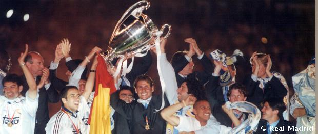

تألقت في هذه المرحلة أسماء بارزة من أمثال خورخي فالدانو وفابيو كابييو و فيسنتي دل بوسكي Jorge Valdano , Fabio Capello y Vicente del Bosque وكان المدربون الثلاثة الرائعين الذين قادوا ريال مدريد الى التتويج في الدوري الإسباني وفي كأس أوروبا، وبقيادتهم كان يلعب نجوم كبار عيار رونالدو، لاودروب، سيدروف،سوكر مياتوفيتش او وروبرتو كارلوس Redondo, Laudrup, Seedorf, Suker, Mijatovic o Roberto Carlos الذين في صفوف الفريق الملكي في التسعينيات.

عاد خورخي فالدانو الى صفوف ريال مدريد في عام 1994 بعد اثبات جدارته وقدرته على ابداع كرة قدم جذابة كمدير فني في نادي (تينيرفي) الاسباني. وبالتعاقد مع لاعبين هم رونالدو، لاودروب، امافيسكا وكانيزاريس de Redondo, Laudrup , Amavisca y Cañizares فاز المرينغي بلقب الدوري الإسباني في ذلك الموسم الذي شهد أيضا اول مباراة للاعب راؤول ذي 17 ربيعا Raúl .. وقد نزل المدريدي الشاب الى ارض الملعب لتغطية غياب مارتين فازكيز Martín Vázquez في مباراة امام فريق سرقسطة على ملعب (روماديرا) وأدى لعبا متميزة لتكون تلك بداية اللاعب الأسطورة.
وفي بداية العام 1995، سحق ريال مدريد غريمه برشلونة تحت قيادة يوهان كرويف بخماسية نظيفة على ملعب (سانتياغو برنابيو) في لقاء متلفز تابع مجرياته أكثر من عشرة ملايين مشاهد. الا ان النتائج السيئة التي حصدها الفريق في الموسم 1995-1996 دفعت برئيس النادي لورينزو سانث الى التعاقد مع فابيو كابييو الذي كان يعد آنذاك أحد أفضل المدربين في كرة القدم الأوروبية. وتعامل المدرب الإيطالي مع تشكيلة فذة اشبه بالحلم بعد ضم سيدروف، وسوكر ومياتوفيش وروبرتو كارلوس الى جانب راؤول وهييرو او رونالدو Seedorf, Suker, Mijatovic y Roberto Carlos, junto a los Raúl, Hierro o Redondo وهو امر قاد ريال مدريد الى تحقيق لقب الدوري الإسباني مرة أخرى.
وكان يوم 20 مايو من عام 1998 يوما تاريخيا بالنسبة للريال مدريد، فبعد 32 عاما وتحت قيادة جوب هينكس عاد الفريق الملكي الى القم الأوروبية بعد فوزه على (يوفنتوس) الإيطالي في نهائي دوري ابطال أوروبا. وسجل آنذاك اللاعب مياتوفيتش Mijatovic الهدف السابع للريال مدريد في الدقيقة 66 من المباراة التي جرت على ملعب (أمستردام ارينا) ليحمل ريال مدريد الكأس الى متحفه في (سانتياغو برنابيو). وفي ديسبمر من العام نفسه، وهذه المرة تحت قيادة المدرب جوس هيدينك، حاز ريال مدريد على ثاني كأس انتركونتيننتال.
وعاد فيستني ديل بوسكي في عام 1999 وبعد مسيرة كروية مرتبطة ارتباطا وثيقا بالنادي الملكي ليقود الفريق الأول كمدير فني ونجح ديل بوسكي في زرع فلسفة قادت النادي ليكون الأفضل في القارة العجوز، ووصل أول القاب الفريق في عام 2000 حيث أحرز آنذاك ثامن كأس أوروبي في تاريخ الفريق، وفي ذلك العام نفسه تقلّد فلوينتينو بيريز Florentino Pérez رئاسة النادي وتعاقد مع واحد من أفضل اللاعبين في العالم لويس فيغو Luis Figo .